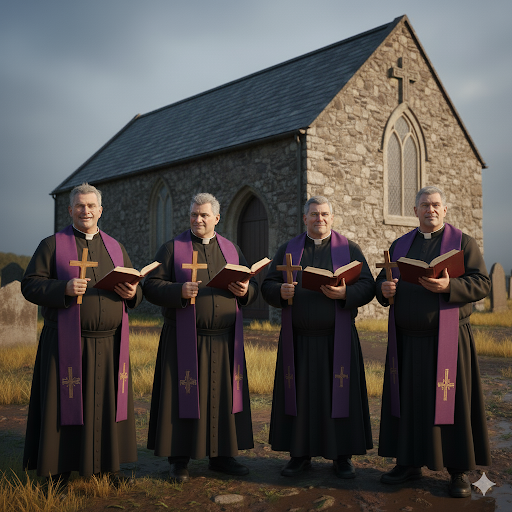
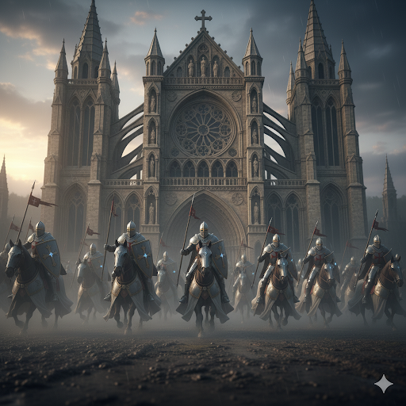
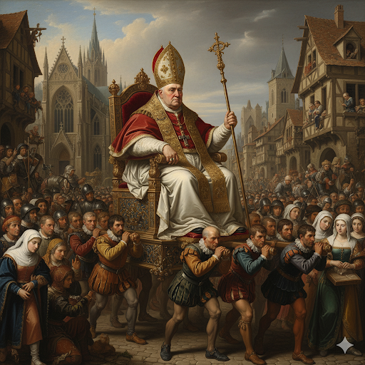
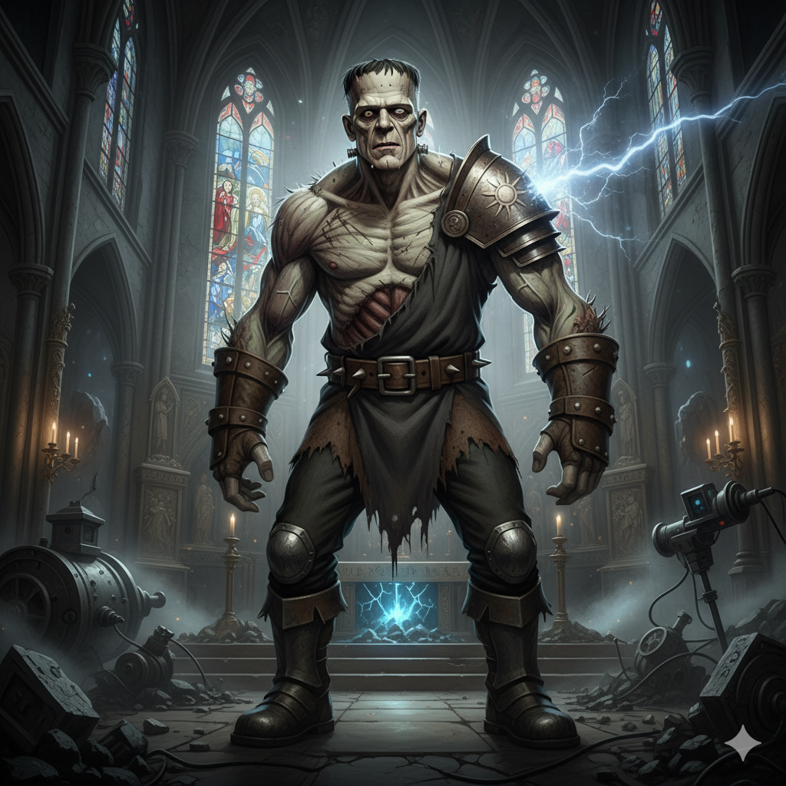
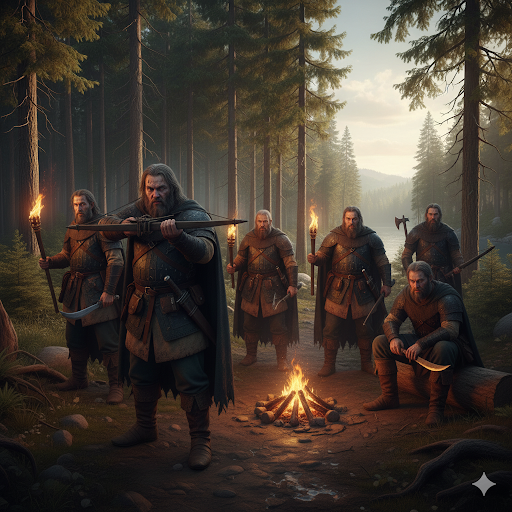

點擊上方的語言選單以切換語言
聖光裁決會原為中世紀信仰與法律的守護者，但在數百年的權力積累與異端審判中，早已變質為一個壓迫、掠奪與偽善的腐敗機器。他們披著神聖外衣，內裡卻爛透，與貴族共謀壓榨百姓，並打著「淨化世界」的名號清除異己、消滅知識，甚至暗中操縱國家政治與經濟走向。
他們最大的敵人，不是惡魔，而是真相與自由。
組織最底層，負責教義宣導與社會監控。他們會蒐集村莊中的「異端行為」，如閱讀禁書、使用草藥、女性識字等，並上報給上層審查。一些教士甚至與地方領主勾結，以信仰之名進行勒索與剝削。
聖光裁決會的武裝鐵拳。他們穿著銀甲，揮舞祝聖兵器，是執行異端清除的直接打手。多數人盲從命令，也有些人開始質疑組織的腐敗，但無人敢違抗。傳說中最冷血的審判騎士，曾一夜燒毀整個村莊，只因一名女孩疑似擁有魔法。
掌握實權的高階領袖，多來自貴族世家或宗教世襲體系。他們擁有封地、軍隊與秘密情報網，為了擴張勢力不擇手段。許多紅衣主教私下學習黑魔法、進行活體實驗，對外卻宣稱為「聖光的研究」。
組織最高領袖，地位高於國王，被稱為「神在人間的代理人」。他擁有絕對的生殺大權與聖旨書寫權。現任教皇年事已高，行蹤神秘，傳言他已與不死存在締結契約，並試圖召喚舊日封印的禁忌之力。
科學怪人是聖光裁決會創造出來的生化武器，旨在對抗異端與叛亂。這位龐大的生物曾經是一名罪犯，被科學家用禁忌的生命重生技術改造成一個強大的戰士。儘管他擁有無比的力量與耐力，但他也承受著極大的痛苦與內心的掙扎。他的模樣不符合任何人的審美，因此成為了教會的秘密武器，並且被賦予了清除異端的使命。
科學怪人被聖光裁決會視為最具威脅的敵人之一，他的存在讓教會的高層感到恐懼，因為他是一個被創造出來的「異端」，不僅對外界的異端群體構成威脅，對於教會內部的腐敗與不義也存在著強烈的反感。他的動機不明，但他始終在尋求一個解脫的方式，並且對聖光裁決會的創造者心生仇恨，時常試圖脫離他被迫賦予的角色，並尋求自己的自由。
雖非裁決會正式成員，獵巫人是活動於邊境與荒野的「自由異端獵人」，他們以錢為主，為貴族或神職者接案獵殺女巫、吸血鬼與狼人。大多數獵巫人行徑殘暴，無審判、無證據，只求賞金。他們與裁決會常年合作，並享有特權不受約束。
他們是教會的暗影手，是腐敗正義的合夥人。
曾經有一名天才科學家，是聖光裁決會的一位外科醫生，專門研究人體解剖與神聖的生命重生。隨著時間的推移，這位科學家被逐漸推向了禁忌領域，他不滿於僅僅以神權為基礎的療法，開始尋求基於「科學」的永生之道。他的目標是用人體改造與復生技術，創造出一個「無敵的戰士」，可以摧毀所有異端。
當時教會的高層看中這位科學家的能力，為了應對異端威脅，秘密資助他的研究。科學家使用異端生物的基因與科技，將一名瀕死的罪犯改造成了一個巨人般的生化武器——這便是科學怪人。
然而，科學怪人並未如預期那樣成為完全的武器。由於他缺乏真正的「人性」，並且無法完全融入現有的道德結構，他開始對教會產生強烈的反感，對自己身體的改造感到極大的痛苦與憤怒。他的存在彷彿是一個人類的怪物——他的模樣與行為總是讓人不安，這也使他無法被社會所接受。
因此，科學怪人最終成為了聖光裁決會的秘密武器，執行異端審判。他被賦予無情的指令，視一切異端為摧毀目標，並被教會的上層當作工具使用，但他並不甘心，心中對「創造者」和自己身世的秘密深感不滿，並逐漸產生了逃脫與反抗的念頭。
米莉亞：作為一個被迫與黑暗力量締結契約的女巫，米莉亞或許會發現自己被科學怪人視為「不純潔的存在」。她可以感受到他強烈的仇恨與暴力，並且知道自己必須避免與他正面對抗，因為他對於「異端」的仇恨遠超出普通人的理解。她或許會從一開始就試圖避開與科學怪人的直接交鋒，但最終會發現，他的存在無法忽視，並且可能成為她不可避免的敵人。
伊蓮娜：狼人血脈的伊蓮娜或許與科學怪人有著某種獨特的共鳴，她也是一種「被創造」的存在，對於這種人造生命的悲哀和掙扎有所理解。她或許會產生某種同情心，但也必須與他為敵，因為他代表著教會對所有異端的壓迫。
賽勒斯：作為吸血鬼的賽勒斯，無疑會對這個人工生命充滿警惕，畢竟他自己也經歷過類似的命運。科學怪人不僅是教會的工具，還是賽勒斯的另一個對立面，象徵著「不死」與「人性喪失」之間的對立。賽勒斯可能會對他展開深入的對抗，不僅是出於保護自己的動機，也是為了終結這個被操控的生物的痛苦命運。
科學怪人的動機並不簡單。他並非完全的邪惡存在，更多的是一個悲劇性的人物，處於被創造、被操控的命運中。他並不完全了解自己所做的一切，但他知道，自己被視為「工具」和「武器」，而教會對他並無真正的關心。這使得他對聖光裁決會產生深深的憤怒與怨恨，並且渴望找到一種解脫的方式。
他可能最終會成為一個「反英雄」，在面對自己所屬的教會與那些他所仇恨的「異端」之間，做出最終的抉擇。
三位主角——米莉亞（女巫）、伊蓮娜（狼人）與賽勒斯（吸血鬼）皆曾遭受聖光裁決會殘酷的迫害。
米莉亞曾是一位研究草藥與星象的學者少女，因在村落中傳授知識與療癒術而遭教士密告為「私通魔鬼」。在未經審判的情況下，整個村莊被焚毀，她被迫逃亡，並在絕望中與黑暗力量締約，獲得不死之力。
伊蓮娜自幼與自然親近，擁有血脈中遺傳的狼族詛咒，卻從未傷人。她的父母試圖與教會交涉求庇護，卻遭審判騎士公開處決。她在逃亡途中被米莉亞所救，並接受禁術賜予長生。
賽勒斯原是出身貴族的年輕騎士，忠誠於信仰與榮譽。但當他揭發紅衣主教貪污與弒民之罪時，反遭誣陷為「被吸血鬼誘惑的墮落者」。他被公開施以火刑，卻在生命盡頭被一位古老吸血鬼以鮮血救贖，自此成為不死者，遭裁決會視為最高等級的異端目標。
三人從未尋求破壞，只渴望活著。卻被聖光裁決會視為「腐敗存在」而獵殺。如今，他們選擇反擊，不為復仇，而為阻止更多無辜被信仰之刃屠戮。
聖光裁決會的高層幾乎全由年邁、肥胖、貪婪的男人組成——教士的肚腩垂至腰間，紅衣主教的指環上沾著烤肉油漬，連教皇本人都坐在金椅上氣喘吁吁，滿臉油光。他們高舉聖典，卻無一不是色慾薰心、貪得無厭的活化腐屍。
這群男人不是中年大叔，就是滿頭白髮的老頭。他們貪財無底線，好色無節制，卻披著「神意代行者」的光環，踐踏他人尊嚴，施暴於無辜者。他們熱衷於審判與獵巫，實則只是尋找「合法」迫害弱者與滿足慾望的藉口。
尤其當他們發現賽勒斯，一位俊朗、沉穩且被兩位年輕絕美女主所傾心的吸血鬼，他們的嫉妒與仇恨更是無法掩飾。他們既恨他的外表，也恨他能擁有她們的愛，更恨自己永遠得不到這一切。
在他們心中，「神的正義」不過是用來懲罰年輕與美麗的工具，而「異端審判」則是掩飾自己無能與淫念的手段。他們想要的不只是懲罰，而是毀滅那些他們永遠無法成為、也永遠無法擁有的存在。
聖光裁決會以「拯救靈魂」為名，對平民百姓實施長年累月的掠奪與控制。他們強制徵收「贖罪稅」、「純潔捐」、「防魔基金」，名目繁多、無底洞般吞噬人民的血汗，誰若無力繳納，便被貼上「異端」的標籤，投入審問室折磨或焚燒。
更令人髮指的是，他們對民間女子進行系統性的性剝削。農家少女若長得美貌，往往會被指控為「女巫潛質」，送入教士的「淨化所」，實際上淪為權貴的玩物；已婚少婦若無力納稅，也常被迫以「肉身供奉」換取赦免。他們稱這些強暴為「祝福的聖合」，而受害者只能選擇沉默，否則被處以火刑。
無數村莊在他們的剝削與放任下淪為廢墟，而人民只能跪倒在神像前祈求虛假的救贖，因為任何反抗都會換來死亡與焚燒。所謂的信仰，在這些腐敗神職的手中，早已變成販賣恐懼與掌控人心的商品。
本遊戲世界觀為虛構設定，但靈感部分來自於中世紀歐洲歷史中真實存在的社會現象，包括教會的政治勢力、宗教迫害、獵巫行動、知識打壓與階級壓迫等事件。
遊戲中的角色、組織與事件皆屬創作虛構，並非針對任何特定宗教、歷史人物或現代信仰做出指涉或批判。本作採用黑暗奇幻與社會諷刺風格進行藝術表現，旨在探討權力濫用、人性墮落與信仰失衡所帶來的社會後果。
如有雷同，純屬巧合。玩家在遊戲中所見之劇情，請以虛構娛樂角度理解，並與現實歷史保持區分。